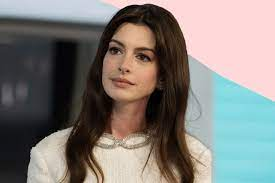
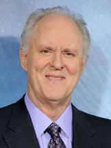
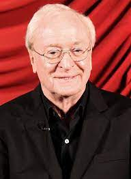
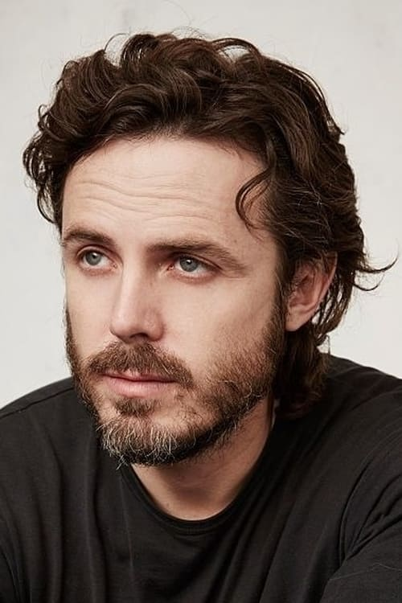

Christopher Nolan, CBE é um diretor de cinema, roteirista e produtor britânico. Seus dez longas-metragens já arrecadaram o equivalente a mais de 4,2 bilhões de dólares em todo o mundo, fazendo do diretor um dos mais bem-sucedidos comercialmente da moderna Hollywood.
Elenco

Anne
Hathaway
Nacionalidade:EUA, Nova York
Idade: 43 anos
Anne Jacqueline Hathaway é uma atriz norte-americana. Recebedora de vários prêmios, incluindo um Oscar, um Globo de Ouro.

Michael
Caine
Nacionalidade:Reino Unido, Londres
Idade: 90 anos
Sir Michael Caine, nascido Maurice Joseph Micklewhite, é um ator e produtor de cinema britânico, duas vezes vencedor do Oscar da Academia para Melhor Ator Coadjuvante e famoso por interpretar Alfred Pennyworth, o mordomo de Bruce Wayne/Batman na trilogia de filmes de Cristopher Nolan.

John
Lithgow
Nacionalidade:EUA, Nova York
Idade: 77 anos
John Lithgow nasceu em Rochester. Sua mãe, Sarah Jane, era uma atriz aposentada, e seu pai, Arthur Lithgow era um produtor e diretor teatral que dirigia o McCarter Theatre em Princeton, New Jersey.Devido ao trabalho de seu pai, a família mudou-se frequentemente durante sua infância.

Casey
Affleck
Nacionalidade:EUA, Massachusetts
Idade: 47 anos
Caleb Casey Affleck-Boldt, filho de Chris Ann, uma professora e Timothy Affleck, um assistente social, barman e ex-ator da Companhia de Teatro de Boston, nasceu em 12 de agosto de 1975. Casey é irmão mais novo do também ator e diretor Ben Affleck, com quem colaborou profissionalmente em filmes como Good Will Hunting (1997) e Gone Baby Gone (2007). O sobrenome "Affleck" é escocês, mas o ator também é descendente de alemães, ingleses, irlandeses e até suíços